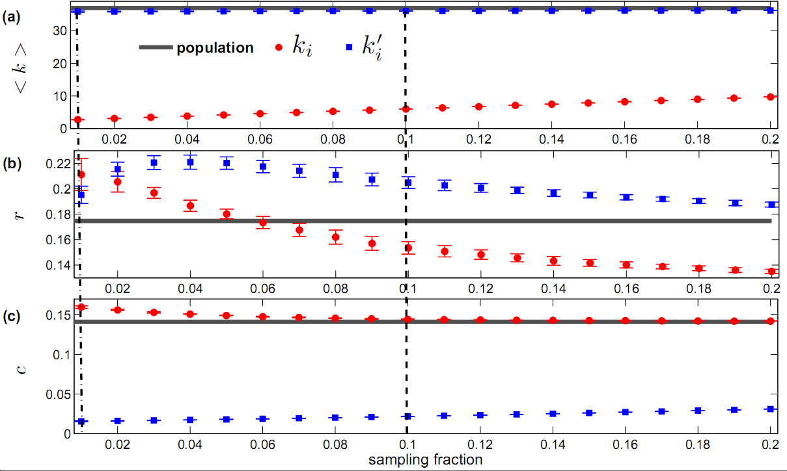
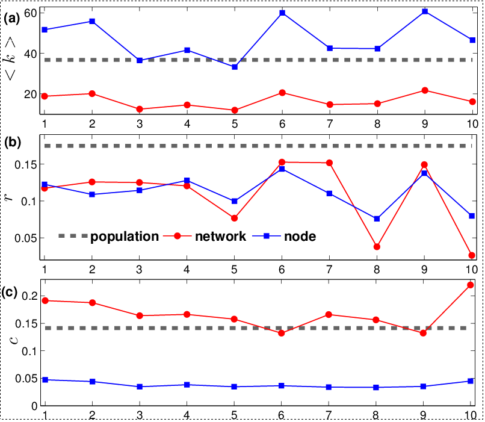
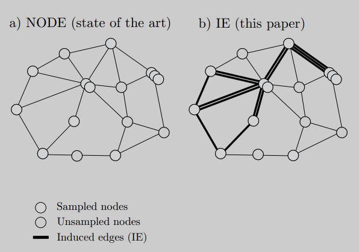
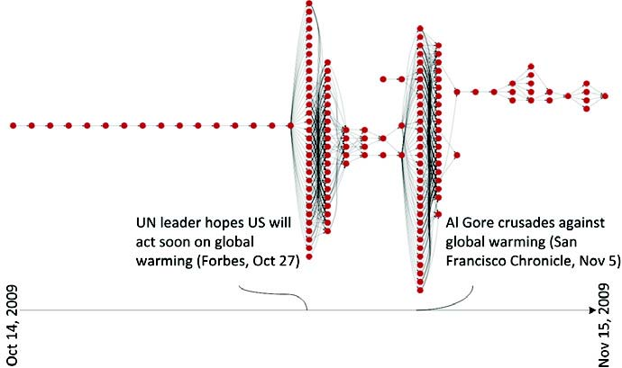
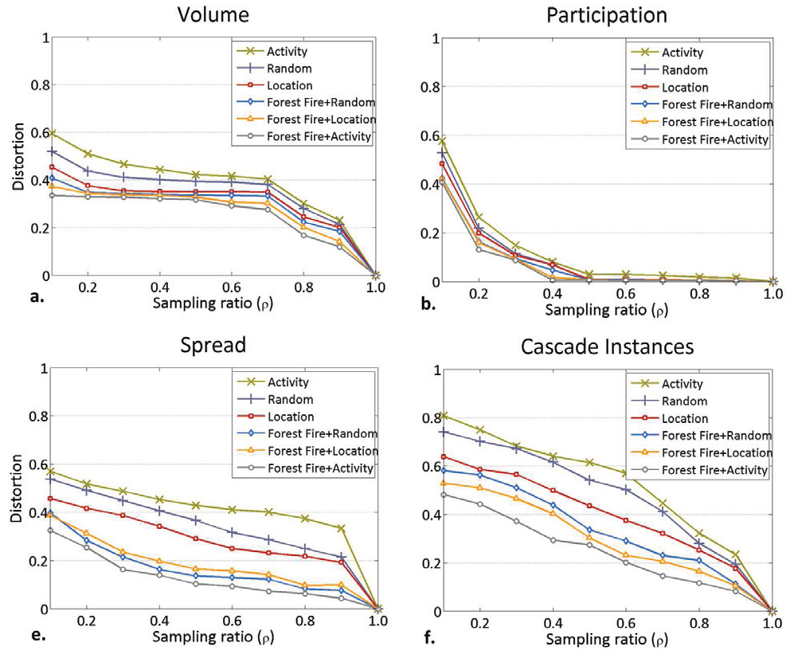
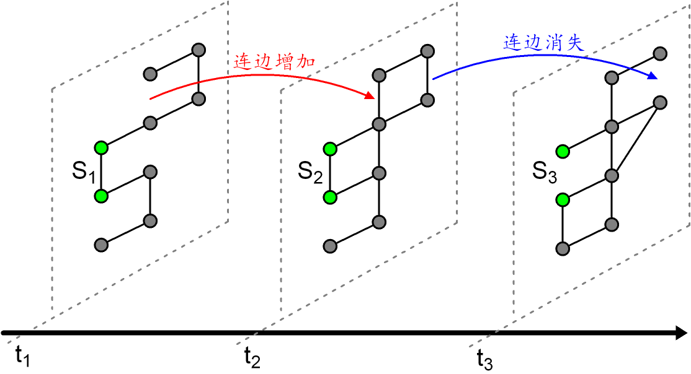
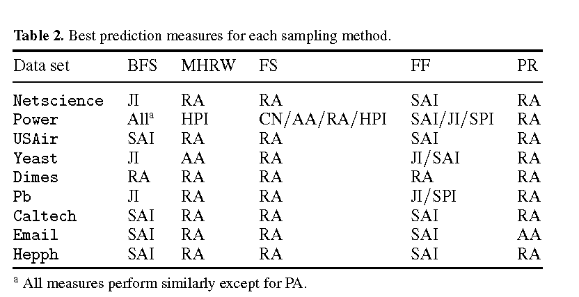
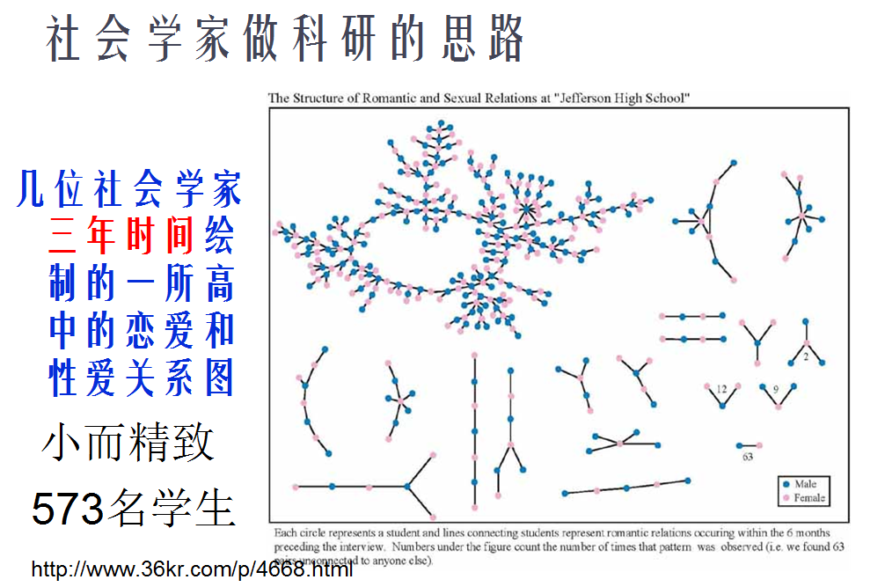
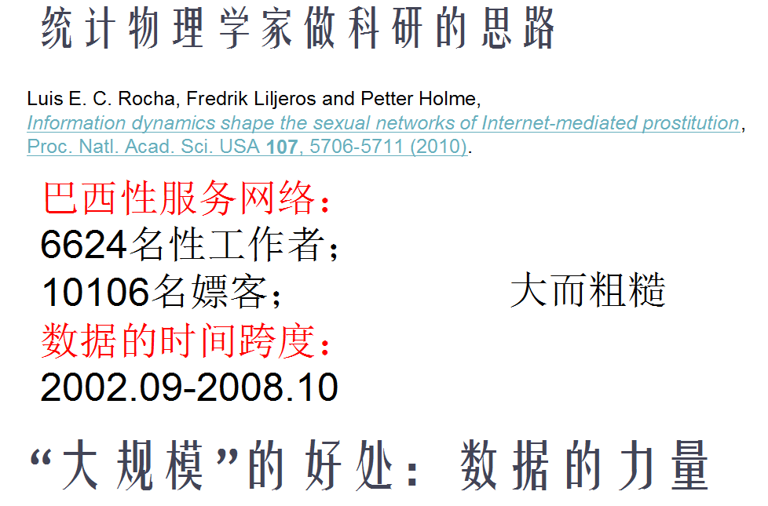

案例：全国1%人口抽样调查

参考：http://news.xinhuanet.com/politics/2006-08/26/content_5009832.htm
参考：http://news.xinhuanet.com/politics/2006-08/26/content_5009832.htm


简单随机游走抽样法偏向于抽取度大节点：抽取概率和节点度成正比。

[1]: S. L. Feld, Why your friends have more friends than you do, American Journal of Sociology, Vol. 96, No. 6 (May 1991), pp. 1464–1477.

MHRW方法在随机游走的时候以一定的概率偏向于度低的节点


[1] 平均度：Mean Degree [2] 聚类系数: Clustering Coefficient [3] 匹配细数：Assortativity Coefficient





[1] Kurant M, Butts C T, Markopoulou A. Graph Size Estimation[J]. arXiv preprint arXiv:1210.0460, 2012.

[1] Munmun De Choudhury, Yu-Ru Lin, Hari Sundaram,K. Selcuk Candan, Lexing Xie, Aisling Kelliher,How Does the Data Sampling Strategy Impact the Discovery of Information Diffusion in Social Media? Proceedings of the Fourth International AAAI Conference on Weblogs and Social Media,2010.




[1]Jichang Zhao, Xu Feng, Li Dong, Xiao Liang and Ke Xu. Performance of local information-based link prediction: a sampling perspective, J. Phys. A: Math. Theor. 45 (2012) 345001

